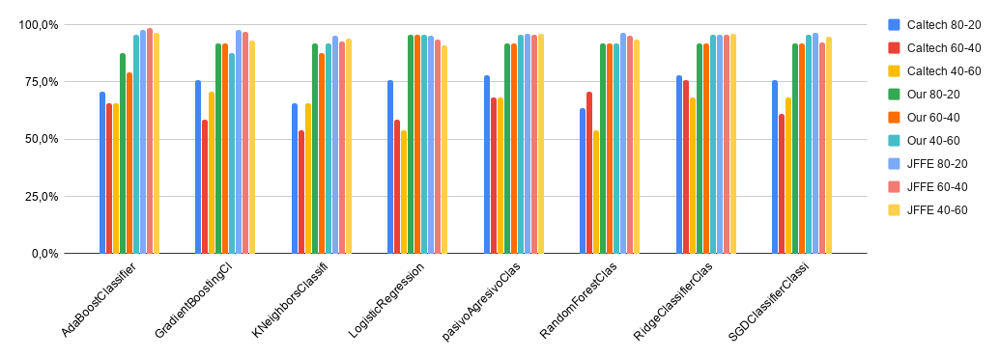

Our algorithm is based on the detection of facial Action Units (AUs) to identify happiness, or the lack of it. Action Units describe feature movements of specific parts of the face, like raising the eyebrows or closing the eyes.
But, how can this algorithm detect AUs based on movement if we work with still pictures? Easy: we use a picture where the person has a neutral expression and compare it to the happy (or not) picture. That way we are able to detect "movements" without requiring a video.
After identifying the AUs present in the image, our trained classifier determines if the person in the image shows happiness or not, which is the goal of this project.
Algorithm
So, in a deeper level, how does our program decide if a person is happy or not?
The first step is detecting the face in the picture: the contour, the eyes, nose and lips, and translate it to a set of points we can identify as such. This step is done by a trained algorithm developed by another researchers. We just select the points that are interesting for us, which are defined in the following image:
After identifying these points (called fiducial points) in both the target image and the neutral one, the algorithm normalizes the distances between points in relation to the distance between the inner eye points. With the normalized distances, the next step is comparing both pictures in order to find AUs. This step ends when each AU has a value from 0 to 1 depending on how intense that AU is in the analysed picture. This process is shown on the flowchar below
The final step is running a classifier with the values of each AU. We tried different classifiers both linear and non-linear. They take the value of all the AUs and decide if the image shows happiness; after that, we compare it to the real value of happiness, provided by the selected database, and asign a ratio of success to each classifier.
Furthermore, we have developed a user-friendly program that executes all these steps with the pictures of your choosing. The whole algorithm and user interface can be found in our
GitHub repository
, open for everyone to download.
Results
The validation of the algorithm was conducted in the next manner; first, the training, then validation and finally results. We trained different classifiers with different training and validation batch sizes. This means that, from the 100% of the original database of images, we selected a percentage to train and the rest to validate the training, to avoid overfitting. We created three models; one used 80% of the original images to train the classifiers, ant the 20% left to validate; we called it Model(80-20). We also had the models Model(60-40) and Model(40-60), which follow the same naming convention.
Once the classifiers were trained, we had to put them to work. For this, we selected three databases; the JFFE which we had been using, a database from Caltech, composed of images taken to memebers of the center; and a small database we created with our own faces. To be able to determine the best classifier, we had to compare between all the models and the databases; so we made graphs.

As the graph shows, the best results are obtained in the database JFFE, which is expected because it is the one we used to train and validate, thus, the images are "known". The next one in precision is our own database, probably due to our knowledge of our own algorithm, making us biased about the facial expressions we made. Finally, the Caltech database is the lowest because the images are not prepared to be used in this manner, the faces of the people is not centered, ilumination is heterogeneous, and many other factors, induce some error in our models. There is no clear winner between models, it was expected that the best one would be the Model(60-40), due to the low risk of overfitting, but the use of more training images. However, the results show that each classfier in each database offers different precisions which do not correlate directly to a specific model. Talking about classifers, the best one in an overall performance is the pasivoAgresivoClassifier. It maintains a good precision in every model, across all databases. The only cases in which another model is better occurs in the JFFE database, which does not defines a better performance because the images are known.